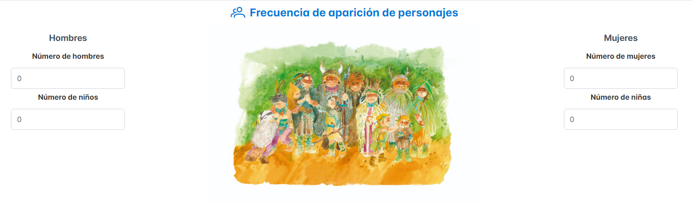
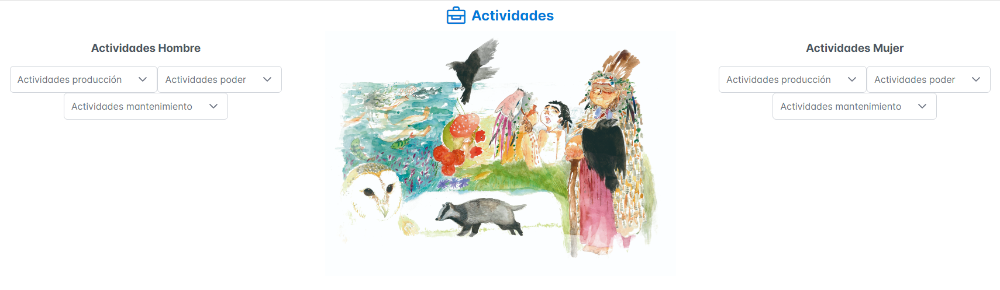

Explicación de la herramienta de valoraciones
Género
La herramienta de análisis valora los textos que incorporan lenguaje inclusivo, de tal modo que un libro escrito con lenguaje inclusivo obtiene el 100% de puntuación. En cambio, los libros que emplean masculino genérico reciben 0 de puntuación.
Frecuencia de aparición de personajes
La herramienta de análisis valora la frecuencia de aparición de personajes femeninos y masculinos. Primero se debe contabilizar el número total de mujeres, niñas, niños y hombres que aparecen en el libro. En segundo lugar, la herramienta acepta la consignación de sexo femenino diferenciando niñas por un lado y mujeres por otro. Igualmente, para el sexo masculino. Cuando hay paridad de hombres y mujeres se otorga el 100% de puntuación, puesto que el libro visibiliza por igual a los dos sexos. Y cuando no hay paridad, por ejemplo, cuando hay una presencia mayor de hombres la puntuación corresponderá al porcentaje del colectivo menor representado, en este caso el de las mujeres.
Actividades
La herramienta de análisis valora las actividades realizadas por hombres y por mujeres. En primer lugar, se han identificado tres grandes tipos de actividades: actividades de producción, actividades de poder y actividades de mantenimiento. Se observa cómo, en los libros infantiles de prehistoria (LIP) predomina la asignación de actividades de producción y poder a los hombres. Por tal motivo, esta herramienta de análisis pondera o valora en positivo las actividades que rompen el estereotipo, por ejemplo, cuando aparece una mujer tallando piedra, pintando en una pared rocosa o cazando. Del mismo modo, lo hace también cuando un hombre es representado en labores de mantenimiento como la crianza o los cuidados.
Ubicación
Para el análisis de la ubicación de los personajes, la herramienta se basa también en el patrón que rompe el estereotipo. De este modo, la herramienta atribuye un valor de 0% a mujeres representadas siempre en ambientes domésticos y hombres solo en ambientes exteriores. Asigna un valor de un 25% a mujeres en ambientes domésticos y solo alguna de ellas en el exterior. Un 50% a representaciones con hombres y mujeres en ambientes exteriores e interiores, pero hay desequilibrio. Un valor del 75% a hombres y mujeres en ambientes exteriores e interiores, casi sin desigualdad. Y un 100% a imágenes de hombres y mujeres en ambientes exteriores e interiores por igual.
Cómo se realizan los cálculos
La herramienta de análisis realiza los cálculos automáticamente una vez que se han ingresado todos los datos necesarios. Esto incluye la evaluación de género, frecuencia de aparición de personajes, actividades y ubicación. Cada uno de estos factores se pondera según los criterios establecidos, y el resultado final se presenta como un porcentaje que refleja cuán inclusivo y equitativo es el libro analizado.
Cómo guardar la estimación

Después de realizar los cálculos, la herramienta permite guardar la estimación para su posterior consulta y análisis. Para ello, solo es necesario completar los campos obligatorios, como el título y el ISBN. Adicionalmente, se puede proporcionar información opcional, como el nombre del autor y otros detalles relevantes. Esta funcionalidad asegura que todas las evaluaciones estén bien documentadas y disponibles para futuras referencias.